Chapter 5 describes the grounding concepts and safety in distribution networks. Customer installations are connected to these networks, which makes the aspect of safety particularly important. In addition to security concepts, attention is given to touch safety during short circuits in low or medium voltage networks.
Grid operators transport and distribute electricity at various voltage levels. Each voltage level has its own grounding method to ensure reliability, security, and the protection of people and equipment. In the past, the grounding of high, medium, and low voltage networks was often designed and implemented independently of each other.
Due to the use of interference-sensitive electronics, grounding systems need to be better coordinated, and network operators must address this integrally. One aspect of the integral approach is that the grounding systems of networks with different voltage levels are interconnected. The downside of this is that by integrating grounding systems, faults occurring in higher voltage networks can also be noticeable elsewhere in the electrical grid. Designers must be fully aware of this. An additional complicating factor is that in the past, metal water pipes and lead-sheathed electrical cables significantly contributed to electrical safety in the low voltage network because they had extensive contact with the ground, thereby limiting high voltage differences. Plastic is increasingly replacing metal water pipes. In new constructions and replacements, cables with plastic outer sheaths are often used. Since this reduces contact with the ground, additional measures must be taken to ensure the safety of low voltage connections and equipment. This is achieved by integrating the grounding systems of networks at all voltage levels and the other telecom and cable television networks (Waes, 2003-2).
Something that people often do not realize is that the current, which departs from the energy source to the connected devices, must also return via a return path to achieve a physical balance. An important route for this is through the ground. By consciously incorporating grounding systems into the design, better control is achieved over the routes the currents will follow to comply with the laws of physics.
One of the most common failures in the network is that a cable gets damaged by excavation work. This can cause a short circuit between a phase and the protective sheath of the cable. It is usually these short circuits that lead to an increase in touch voltage. For this reason, the study of safety focuses on the applied grounding concepts and the consequences of phase-to-ground faults. This chapter addresses the aspects surrounding grounding and safety. The calculation of the magnitude of short-circuit currents is covered in chapter 10.
The safety of the networks is ensured by taking the appropriate safety measures during design, installation, operation, inspection, and maintenance. An important aspect of safety is protective grounding.
Grounding an electrical network begins at the power supply point. This is usually the secondary winding of a transformer. If the secondary winding has an externally accessible neutral point, the neutral point can be grounded: directly (solid) or through a grounding impedance. If the power supply point does not have an externally accessible neutral point, an artificial neutral point can be created using a grounding transformer, which is grounded through an impedance. It is also possible to leave a network ungrounded.
In networks with a floating neutral point, as depicted in figure 5.1, there is no specific return path for the currents in the cable sheaths that flow during the contact of a phase with the ground. The return currents can now only flow through the capacitances present in the network between the phase conductors and the cable sheaths. These currents are capacitive, and their magnitude depends on the total length of the floating network behind the supply transformer. Floating networks are particularly used in medium voltage (MV) distribution networks.
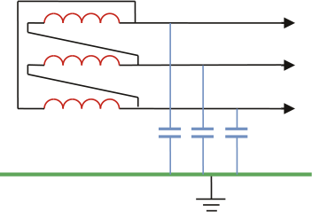The coupled voltages between the phases themselves are hardly affected in the event of a phase-to-ground fault, so the loads behind a Dy-transformer do not notice it. However, the values of the voltages of the unaffected phases relative to ground will increase by a factor of √3. This is illustrated with the voltage vectors in Figure 5.2. The left graph shows the voltage vectors relative to the ground potential. In normal operating conditions, the voltage of the ungrounded neutral point is equal to the ground potential, and the starting point of the vectors coincides with the origin of the graph. In the event of a phase-to-ground fault in phaseathe voltage of that phase with respect to the ground is zero. As a result, the ungrounded neutral point of the network shifts in the negative direction of the original voltage vector of phasea. As a result, the vectors of the phases shiftbencalso in the same direction. The entire system has now shifted, and this is made visible with the striped vectors. As a result, the red vectors indicate the voltage of the phasesbencrelative to the ground. The coupled voltages between the phases themselves remain unchanged, but the phase voltages relative to the ground change significantly.
The short-circuit current in the shorted phase can amount to several hundred Amperes but does not necessarily cause much damage due to the relatively low short-circuit current. If the network is expanded, it must be ensured that the short-circuit current does not become too large. Measures can include splitting the floating network or changing the grounding principle of the network by grounding it with a grounding transformer.
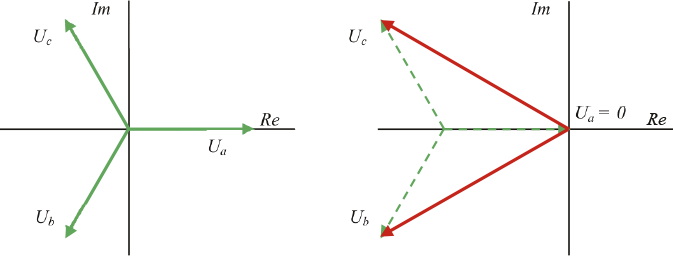A phase-to-ground fault in a floating network can persist for several hours in practice. This is considered a significant advantage because the network can remain operational during the fault. However, locating the short circuit is challenging. The fault location is only known when the section containing the fault is disconnected. After disconnection, the phase voltages return to their correct values. The necessity of locating the fault in this manner is considered a major disadvantage. Another disadvantage is that in networks with short cable lengths, the short-circuit current during a phase-to-ground fault can be so small that the fault repeatedly disappears and then reignites, causing high voltage spikes. This phenomenon is caused by the capacitive nature of the fault current, which extinguishes the short circuit at the moment of the maximum voltage value. Repeated reignition can lead to overvoltages that are 3.5 times the phase voltage (EnergieNed, 1996). A third disadvantage is that the increased voltage during the phase-to-ground fault can cause a second short circuit in one of the healthy phases, leading to a large short-circuit current after which the network is disconnected.
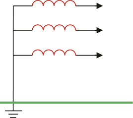In star-grounded networks, the neutral point of the secondary winding of the power transformer is directly connected to the ground, as shown in figure 5.3. Specifically, low-voltage networks are star-grounded. In reality, the grounding impedance is not zero Ohms but is determined by the ground resistance. This return path for the ground currents has a low impedance. Therefore, phase-to-ground faults lead to large short-circuit currents and cause voltage dips in the network. Unlike a fault in an ungrounded network, a fault in a star-grounded network usually does not extinguish spontaneously. In a grounded network, relatively large fault currents occur. This is considered an advantage because the fault can be easily detected with protection devices and can be selectively disconnected. When designing a network, it must be taken into account that the return conductors and cable sheaths are capable of carrying these short-circuit currents.
During a phase-to-ground fault, the unaffected phases will be barely influenced. Consideration must be given to the possibility that the ground potential at the fault location may be significantly increased.
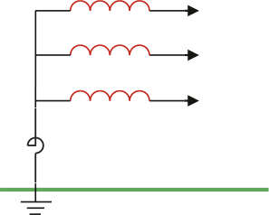Grounding the neutral point via an impedance is applied in medium voltage networks and is usually done with a coil or a grounding transformer, as shown in Figure 5.4. The impedance of a coil and a grounding transformer consists mainly of reactance. The resistance is very small, so the losses during asymmetry, when a current can flow through the neutral point, are minimal. Neutral point grounding via an impedance is used to limit the high fault currents. The fault current and the return current are still high enough to be detected by the protection system and to be selectively disconnected. This is necessary when cables with a limited cross-section of the earth shield, such as plastic cables, are used.
Networks can be grounded with either high or low impedance. In networks that are grounded with high impedance, the phase-to-ground fault currents will be small, and the undisturbed phases will assume a voltage relative to the ground that is higher than in the undisturbed situation. In networks that are grounded with low impedance, the phase-to-ground fault current is large, but it is limited by the impedance, for example, a coil. As a result, the short-circuit current is controlled to be smaller than in a solidly grounded network situation, and voltage dips and the increase of ground potential at the fault location are limited.
Low-impedance grounding was previously only applied to cables with a small cross-section of the earth shield. Nowadays, this form of grounding is increasingly used because it offers a good compromise between solidly grounded networks and networks grounded with high impedance. In medium voltage networks that are grounded with low impedance, it must be calculated for long feeders whether a phase-to-ground fault at the end of the feeder does not result in a fault current that is too small to be detected by the phase protection. This aspect must be checked in every network design. If multiple feeders are operated in series, the protection of the preceding feeder must function as backup protection for the underlying feeder. The backup protection must be able to detect a ground fault at the end of the subsequent feeder. This too must be checked in every design.
A special form of impedance grounding is the use of an arc suppression coil, also known as a Petersen coil. The value of the coil is calculated in such a way that the capacitive current during a phase-to-ground fault is compensated by the inductive current component of the coil. A disadvantage that can occur with this solution is that the phase-to-ground fault current becomes very small when using an arc suppression coil. As a result, a fault can extinguish and potentially reignite. This method of grounding is primarily used in overhead networks. The solution does not work well in practice if there are many cables in the network.
In the event that no neutral point is available, the network can be grounded using a grounding transformer, also known as a neutral grounding transformer or zero-sequence transformer. The impedance of a grounding transformer consists mainly of reactance, so the losses are limited. Depending on the size of the impedance of the grounding transformer, this method of grounding can be treated as high-impedance or low-impedance grounding. The construction and operation of the grounding transformer are described in section 8.4.
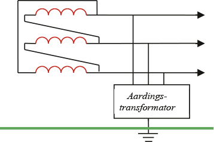At a voltage level of 50 kV or higher, the neutral point is grounded directly or via an arc suppression coil. If a single-phase ground fault occurs in a directly grounded network, the ground fault current is of the same magnitude as the short-circuit current in a three-phase short circuit, and the protection device will disconnect the faulty circuit. Several overhead networks are grounded via an arc suppression coil, also known as a Petersen coil. In a network grounded with an arc suppression coil, the value of the ground fault current is small, so the protection device of the faulty phase does not disconnect but only provides a directional indication. Many phase-to-ground faults in overhead networks are caused by branches or other objects or by lightning strikes. These faults are self-healing and do not lead to an interruption.
Most medium voltage networks are fed via HV/MV transformers, whose secondary windings are configured in a delta connection. The primary windings of the connected MV/LV distribution transformers are also configured in a delta connection. Medium voltage networks do not necessarily need to be grounded, but many of these medium voltage networks are impedance grounded. Figure 5.6 shows the grounding situation in the distribution network and the configurations of the HV/MV transformer and the MV/LV transformer. The HV network is impedance grounded (often Petersen grounding). The MV network is floating, and the LV network is impedance grounded. Sometimes MV networks are grounded with a grounding transformer.
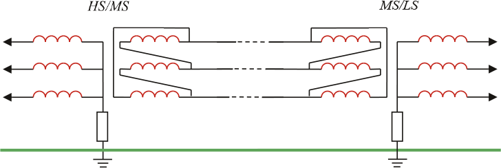In a small network, a phase-to-ground fault in a cable will not immediately lead to a disconnection. As long as the short-circuit current is not harmful to the cable shields, the fault can remain. The fault can be detected and isolated without interrupting the power supply. Because in a floating network, a phase-to-ground fault causes the voltage between phase and ground of the unaffected phases to become as high as the line voltage, this can lead to a second phase-to-ground fault. Together with the first fault, this will result in a large short-circuit current and thus a disconnection.
In large medium-voltage networks, a phase-to-ground fault can cause the capacitive short-circuit current to become so large that it can damage the cables. In that case, it is desirable for a phase-to-ground fault to be disconnected. The medium-voltage network is then impedance grounded. This is done either with a coil at the neutral point or with the help of a grounding transformer if no neutral point is present. In that case, any phase-to-ground fault will trigger the protection system.
When designing a medium voltage network, the following considerations must be taken into account:
It is clear that not all requirements can always be fully met. Designing a medium voltage network is therefore always a process of optimizing conflicting requirements. However, under all circumstances, touch safety must be guaranteed.
Impedance-grounded medium voltage networks are designed for a phase-to-ground fault current of 2000 A at the substation. This value must not lead to an unacceptable voltage rise of the local ground and also must not result in excessively high currents through the cable sheaths.
Low-voltage networks are powered by MV/LV distribution transformers, whose secondary windings are configured in a star connection. In principle, these networks are solidly grounded. The grounding impedance is determined by the number of ground electrodes and the ground spread resistance of the ground electrodes. The short-circuit current in the event of a phase-to-ground fault in the LV network is high and will be interrupted by the protection system in the substation.
The grounding systems in low-voltage networks behind the distribution transformer can be implemented in various ways, with the responsibility for safety being placed more or less on the connected party. The variants are described in the international standard IEC 60364. In the naming of the grounding systems, a letter coding is used, with the most commonly used being designated as TT and TN. The first letter pertains to the grounding of the power source, which in most cases is the distribution transformer. In standard 400V low-voltage networks, this is designated by the letter T, which stands for 'Terre', meaning that the neutral point of the secondary winding of the distribution transformer is solidly grounded. The standard also provides for an isolated or high-impedance grounded neutral point, indicated by the letter I. For the second and subsequent letters:
The protective conductor is referred to by the term PE, which stands for 'Protective Earth.' Usually, the shielding of a cable is used as the PE conductor.
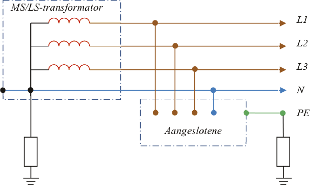In a TT system, one point of the power source is directly connected to the earth, and the metal frames in the installation are connected to grounding electrodes that are electrically independent of the grounding electrodes of the power source. In the TT system, the grounding systems of the consumer and the distribution network are thus separated, see figure 5.7. In this system, the customer is responsible for the maintenance and proper functioning of their own grounding. The return path for phase-to-earth faults consists of the grounding electrode at the consumer, the grounding electrodes at the substation, and the resistance of the ground between the consumer and the substation. The resistance of the return path must be low enough for the protection to disconnect a phase-to-earth fault. A rule of thumb for the resistance Rcof the return path in the event that fuses are used is:
[ |
5.1 |
] |
waarinInthe nominal current of the fuse is (Provoost, 2004). The impedance of the entire circuit must be low enough to limit the voltage rise and ensure a quick disconnection. This method is only feasible in soil with low specific resistance. A fuse of 16 A requires an impedance of 2 Ω for the return path based on equation 5.1. In sandy soil, a fuse of 16 A is not feasible in this grounding system.
In the past, with the right type of soil, there was never an issue with the size of the resistance of the return path, partly due to the widespread contact with the earth. However, by replacing metal pipes with plastic pipes and using plastic in cable sheaths, the resistance of the grounding circuit in the TT system has increased compared to the old situation. In cases where the return resistance is not low enough, residual current devices (RCDs) are used as an alternative by the connected party. An advantage of the RCD is that it trips at a small phase-to-earth fault current, reducing the risk of electrocution, damage, or fire. A disadvantage is that RCDs can fail, leaving the fault in place. This necessitates regular testing of RCDs by the connected parties.
In the TN system, safe grounding is provided by the network operator. In principle, one point of the power source is directly connected to the ground, and the metal frames in the installations are connected to that point via protective conductors. This is achieved with a low-ohm connection between the protective earth of the connected party and the operational earth of the substation. A TN system always provides a sufficiently low impedance for the return path, with an order of magnitude of 0.3 Ω. Using the rule of thumb (equation 5.1), it can be calculated that with this impedance of the return path, all common fuses will disconnect in the event of a phase-to-earth fault in the installation of the connected party.
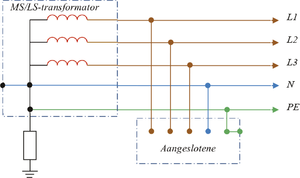In the TN system, various configurations are possible. In a TN-S system, the neutral and PE conductor are separated, see figure 5.8. The power supply circuit and the grounding circuit are separated, and the current distribution is well-defined. This system uses five conductors, which are found in most low-voltage cables: three phases, neutral, and shielding as the PE conductor. An interruption in the PE conductor in this system leads to a safety risk.
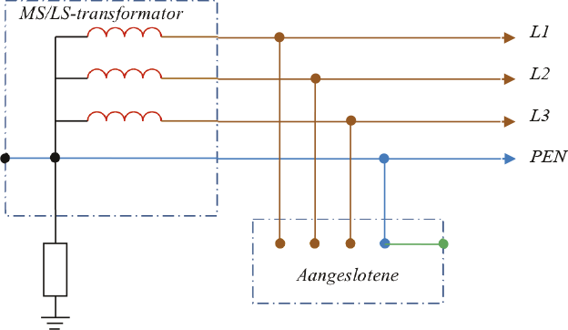In a TN-C system, the neutral conductor and the PE conductor are combined into a single PEN conductor, see figure 5.9. These systems use only 4 conductors and are often applied in industrial networks. An interruption in the PEN conductor leads to voltage problems and a safety risk.
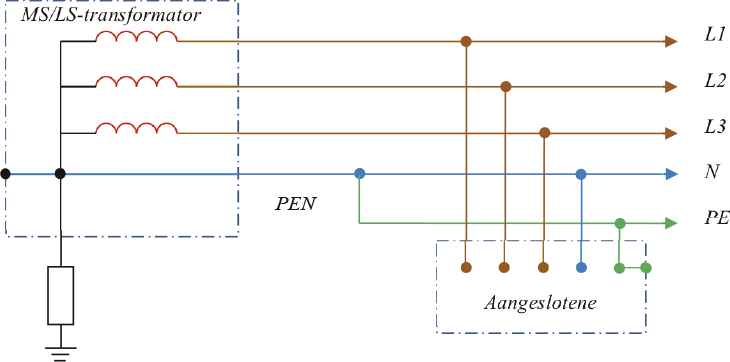The TN-C-S system is a combination of a TN-C and a TN-S system, see figure 5.10. The transport section from the distribution transformer uses the TN-C system, and the distribution section at the consumers uses the TN-S system.
Nowadays, most low-voltage networks are based on the TN-C-S system. To ensure safety, the four-core cables in the TN-C section are equipped with a copper shield of sufficient conductor cross-section. In all joints, the neutral and the shield are connected. In the installation of the consumer, the neutral and PE are also connected. This creates a safe return path, even if the neutral conductor is interrupted. The risk of both the neutral conductor and the shield being interrupted is negligible (Provoost, 2004). This method of grounding combines the advantages of the TN-S and TN-C systems. The parallel connection of the neutral conductor and the shield also reduces the return impedance for asymmetric currents and reduces voltage dips caused by the starting of heavy single-phase loads. Figure 5.11 schematically shows the application of the TN-C-S system for a section of the low-voltage network.
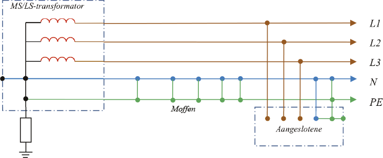In summary, grounding via the TN system for a low-voltage network includes, among other things, the following:
Due to the connection of the protective earth of the connected party with the operational earth, there is a risk of increased touch voltage during short circuits in the low-voltage distribution network. More on this in section 5.7.2. If the grounding systems are also connected to those of higher voltage levels, short circuits in those networks also affect the safety of the connected party in the low-voltage network. This must be thoroughly considered when designing the network. More on this in section 5.7.3.
For a low-voltage network based on the TN system, safety is evaluated for situations involving phase-to-earth faults with the protective conductor. However, the situation where a phase-to-earth fault occurs with a conductive object that is connected to the protective conductor via an impedance can also lead to an increase in potential of the protective conductor and must be evaluated. The voltage on the protective conductor must not become too high in those cases either. The following rule of thumb applies to the situation of a phase-to-earth fault on a conductive object that is not directly connected to the protective conductor:
[ |
5.2 |
] |
in which:
RB total earth resistance of all parallel-connected earth electrodes plus protective conductor (Ω) RE minimum contact resistance with earth of foreign conductive parts that are not connected to a protective conductor, but through which a phase-to-earth fault could occur (Ω) U0 nominal phase voltage (V)
This means that in an LV network with a nominal voltage of 230 V, the ratio ofRBtotREmust be less than 0.278. Assuming that the contact resistance at the point of the phase-to-earth connection REis at least 10 Ω, the fault voltage on the protective conductor relative to earth will not exceed 50 V if the total earth spreading resistance of all parallel-connected earth electrodes plus the protective conductorRBis less than or equal to 2.7 Ω.
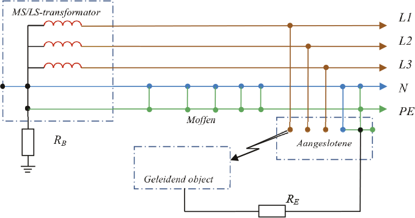In the event of a phase-to-earth fault, the return current flows through various locations with earth contact. An important earth contact, which is gradually disappearing, is the contact of the metal sheaths of GPLK cables. Additionally, there are numerous local earth contacts in the medium and low voltage network. In a low voltage distribution network, there is a lot of 'hidden earth.' It may be that at every house connection or public lighting connection, the PE conductor makes some contact with the earth, either directly through a driven earth electrode or indirectly through connection to a conductive piping system or through contact with other metal parts embedded in the ground. An earth contact with a reasonably defined resistance value is achieved with an earth electrode.
The earth electrode is modeled with a resistance to the 'remote earth'. The resistance of the earth electrode depends on the specific soil resistivity.ρand the physical dimensions of the earth electrode. For a single round rod-shaped earth electrode, formula 5.3 applies for calculating the earth resistance (Happoldt, 1978):
| (Ohms) | [ |
5.3 |
] |
with:
ρ specific resistance of the soil (Ωm) L length of the vertical earth electrode in the ground (m) d diameter of the earth electrode (m)
The specific resistance depends on the soil material, the amount of moisture in the soil, and the soil temperature. Table 5.1 provides an overview for various soil types.
Bodemsoort |
ρ minimum [Ωm] |
ρ maximum [Ωm] |
Veen |
5 |
40 |
Klei |
20 |
200 |
Zand |
200 |
2500 |
Kiezel |
2000 |
3000 |
The difference between the minimum and maximum values of the specific soil resistance is determined by the weight percentage of the moisture present in the material. This can be measured during the driving of the ground electrode, assuming that the measurement is representative of the lowest moisture content of the soil.
In the Netherlands, the ground electrode is often a driven ground electrode made of round copper wire with a diameter of 50 mm.2 (d = 0.0075 m)Other types of ground electrodes are also used, such as solid steel (round, star-shaped, or cross-shaped) with a well-adhering copper layer on the surface or a galvanized round steel variant. To create a ground electrode with a ground spreading resistance of less than 1 Ω, multiple parallel ground electrodes often need to be driven into the ground, spaced widely apart. According to formula 5.3, the ground spreading resistance for a 10 m ground electrode with a diameter of 7.5 mm in soil with a specific resistance of 100 Ωm is equal to 13.7 Ω. The literature (Happoldt, 1978) (Tleis, 2008) provides formulas for calculating parallel or other forms of ground electrodes.
In a distribution network, specific values for ground resistance are applied for all voltage levels. The following values may occur.
The grounding must always be installed in such a way that it does not lead to voltage increases with associated increased risks for people and equipment. The touch voltage is not only determined by the voltage of the PE conductor and the local ground, but especially by the voltage differences between all metal objects that can be touched simultaneously. For this reason, as many conductive parts not belonging to the electrical installation as possible are connected at a central location (the main grounding bar) with the PE conductor of the electrical installation, so that all simultaneously touchable metal frames carry the same potential. The NEN 1010 standard describes that for good potential equalization in every building, all conductive parts of the water supply, gas supply, heating systems, air handling systems, steel structures, and concrete reinforcement must be connected to the main grounding bar. The potential equalization should take place as close as possible to the point of entry into the building. Additionally, it is recommended to connect the protective conductor to as many available well-grounded parts as possible. In a TT system, the local grounding electrode must also be connected to the main grounding bar. Furthermore, the protective conductors of telecom and cable television networks must be grounded at the central location. This is less important for touch safety but crucial for the protection of electronic equipment.
The grounding in the distribution network is spread across all substations and all connections. Each substation has its own grounding, and LS connections can also have grounding. In an LS network where the TN system is applied, a connected user theoretically does not need their own local ground electrode. The only grounding point is then located at the MS/LS distribution transformer. In practice, however, there is always some connection to the ground present, either through ground electrodes or cable sheaths, or indirectly through contact with conductive pipes laid in the ground.
In a distribution network, all ground contacts are interconnected. The influence of dispersed ground contacts can be translated into an equivalent ground impedance Z.eqThis can be calculated from a ladder network. The calculation follows from the development of the series for n segments of a ladder network:
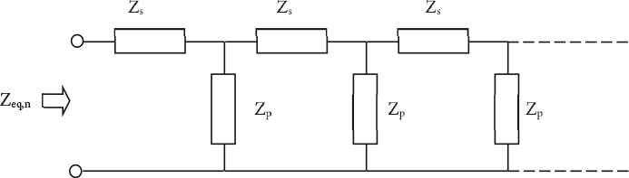In formula form, it holds for n sections:
[ |
5.4 |
] |
in which:
Zs impedance of the PE conductor between two sections, possibly in parallel with the neutral conductor Zp impedance of the ground contact Zeq,n-1 equivalent impedance of the previous section
For most applications, the influence of the cable impedance can be neglected, and the equivalent grounding impedance ofnground contacts approximated according to:
[ |
5.5 |
] |
Short circuits that make contact with the ground lead to an increase in voltage on the grounding system or the local ground. If all grounding systems are interconnected, a short circuit at any level can result in a hazardous situation for a connected individual.
In a substation, the grounding systems of the high-voltage and medium-voltage networks are interconnected. The return current from a phase-to-ground fault in the high-voltage network will not only flow through the return path of the high-voltage network but also through the grounding of the substation and the sheaths of the medium-voltage cables. Particularly, cables that run parallel to the high-voltage line can carry a significant return current. These currents lead to a potential rise in the return conductors of the medium-voltage network.
During a phase-to-earth fault in the medium-voltage network, the return current flows partially through the sheaths of the medium-voltage cables and partially through the grounding electrodes into the earth. In the substations, the grounding systems of the medium-voltage and low-voltage networks are interconnected. The currents through the grounding electrodes in the distribution areas lead to a potential rise in the earth in the substations, which also increases the voltage on the grounding system of the MV/LV distribution transformers. If the grounding systems in the low-voltage network are connected to the grounding system of the distribution transformer, these potential rises can be noticeable in the installations of the connected users. The duration of these voltage rises is determined by the duration of the short-circuit current and is thus dependent on the magnitude of the short-circuit current and the operation of the protection system. The magnitude of these voltage rises is determined by the size of the return current and the impedances of the grounding electrodes and the cable shielding.
The largest return current occurs during a short circuit between a phase and ground. In floating medium voltage networks, the return current is approximately 1.5 A per km of cable, which for networks with typical summed lengths of 130 to 400 km results in a current between 200 and 600 A. If these currents are greater than 300 A, they can be detected and disconnected by protection systems. If these currents are less than 300 A, they are in the order of magnitude of normal operating currents and will not be disconnected by simple maximum current-time protections. A solution for this is to ground these networks with an impedance, for example, with a grounding transformer. In grounded medium voltage networks, the return current is much larger. It is in the order of magnitude of 700 to 2000 A (Provoost, 2004). Due to the high short-circuit current, the protection can intervene selectively, and the duration of the short circuit is determined by this protection.
Low-voltage networks are essentially solidly grounded. The grounding impedance is determined by the earth resistance of the grounding electrode. A short circuit between the phase conductor and the neutral conductor or ground results in a potential increase of the neutral conductor, cable shielding, or ground. Particularly in the application of a TN system, it must be thoroughly considered that short circuits in the distribution network lead to increased touch voltages in the grounding system of the connected users. These voltages and their duration must be limited to safe values. The network designer must check the level of touch voltages and the duration. This can be done, for example, using a computer program for LV network design (Phase, 2009).
In order to keep the impedance of the return path as low as possible, the low-voltage cables have a neutral conductor and a copper shield. Additionally, for safety reasons, the neutral conductor and the cable shield are often connected to each other in all joints, as shown in figure 5.11.
Faults such as phase-to-ground faults are a common occurrence. It is important that these faults do not lead to dangerous situations. A voltage increase on the grounding provisions can be limited by ensuring that the return path has a sufficiently low impedance. The requirements that networks and installations must meet are laid down in the national standard NEN 1010. This standard emphasizes timely disconnection in the event of a voltage increase on the grounding provision. Due to accidents in the past, network operators have been held responsible for situations where a grounding provision no longer meets the standards. For this reason, network operators provide a reliable ground to the connected party and take responsibility for the quality of the ground connection.
In high and medium voltage networks, touching live parts usually leads to serious injury or death. Touching low voltage can also cause injury. The extent of the damage depends on the current strength and the duration of the current passing through the body. A continuous current of several tens of milliamperes is already fatal. In the international standard IEC 60479, hazard curves based on current-time are used to indicate which current strength poses a certain danger over a specific period.
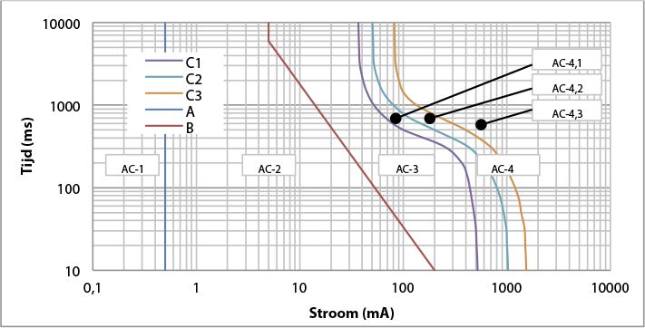The graph uses four zones to indicate the extent to which a human body experiences the current:
In addition to these curves, the Lc-curve is also applied, which is located in the AC-3 area, between curves B and C1. This curve was introduced by the NEN 1010 committee and provides extra assurance. The curve is positioned at such a distance from curve C1 that it is assumed any deviations from the average situation will not result in exceeding curve C1.
The current through the body depends on the touch voltage and the body's resistance. The latter is not constant but depends on:
The body resistance is established in the international standard IEC 60479. Naturally, body resistance varies from person to person. Therefore, the standard provides the resistances for statistical population groups ("Best knowledge on the Total body impedances for living adults"). Figure 5.15 shows the curves with resistance values where, according to statistics, 5%, 50%, and 95% of the population fall below. The 5% line is the safest and is therefore most commonly used.
The body resistance is specified for the case where the current travels from one hand to the other hand or from one hand to a foot. Usually, the body resistance is calculated for touching with both hands and with both feet on the ground, so the value from the curves according to IEC 60479 must be divided by 2. The touch voltage is usually only a part of the fault voltage because the human body is in series with the resistance of the floor and the footwear. The footwear resistanceRschdepends on many factors, but a common value is 1000 Ω. Calculating the maximum time within which a fault voltage must be disconnected is an iterative process, because the touch voltage is determined by the voltage division over the resistances.Rmand Rschover the fault voltageUfand the resistance of the humanRm depends on the touch voltageUa.
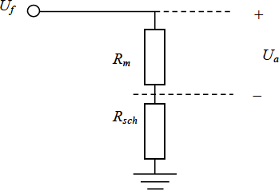Despite the fact that the dangerous influencing factor is the current and not the voltage, the protective measures are often formulated as a voltage limitation. This is based on the relationship between the current and the touch voltage. This is done because voltage is easily measurable. However, in this book, the focus is consistently on the current through the human body.
When applying the TT system, a phase-to-earth fault in the consumer's installation can lead to an increased voltage of the local earth. Figure 5.17 illustrates this for a short circuit between phase L1 and the PE of the consumer's installation. This can also be a short circuit in a device. As a result, the voltage on the consumer's local grounding system is increased.
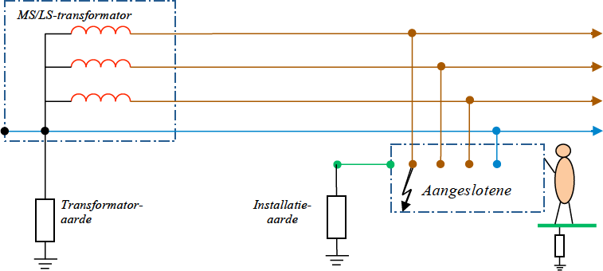The fault voltage for a phase-to-earth fault in an installation with a TT system can be approximately calculated using a simple equivalent circuit. In this equivalent circuit, the impedances of the transformer are represented.ZT), the phase conductor (ZL), the neutral conductor (ZN) and the grounding electrode at the network transformer (ZE1) and at the installation of the connected partyZE2). The fault is a phase-to-earth connection in the installation of the connected party. The fault voltage on the protective conductor of the connected party isUf. Also indicated: the resistance of the human body (Rm), the footwear resistance to earth (Rsch) and the touch voltage (Ua).
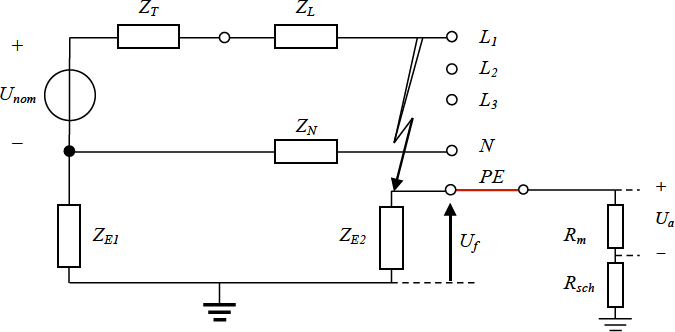In the diagram, it is visible that the return path consists of the series connection of the grounding electrodes at the distribution transformer and at the installation of the connected party. The impedanceZfof the total circuit for the short-circuit current then consists of the series connection of the transformer impedance, the phase impedance, and the return impedance:
[ |
5.6 |
] |
The short-circuit current is calculated from the nominal transformer phase voltageUnom) and the circuit impedance. It is assumed that the source on the medium voltage side of the transformer is infinitely strong.
[ |
5.7 |
] |
The fault voltage on the PE of the connected party is calculated from the fault current and the impedance of the grounding electrode of their installation. This is equal to the voltage division of this impedance over the total circuit impedance.
[ |
5.8 |
] |
Based on the calculated fault voltage, the current through the human body and thus the maximum duration can be determined. The touch voltage is calculated as follows:
[ |
5.9 |
] |
Subsequently, the current through the human body can be calculated:
[ |
5.10 |
] |
Since the body resistanceRmdepends on the voltage, this calculation must be performed iteratively.
Example calculation TT system
A low-voltage network is powered by a 10250/400 V transformer of 250 kVA (uk=4% and Pk=2.8 kW). The impedance of this transformer is:ZT= 0.0072 + j0.0246 Ω.
The low-voltage line is 300 meters long. The cable type is 4x95 VVMvKsas/Alk.
The impedance of the phase conductor over 300 meters is:ZL= 0.0960 + j0.0246 Ω.
The impedance of the grounding electrode at the distribution transformer is:ZE1= 1 Ω.
The impedance of the grounding electrode at the installation of the connected party is:ZE2= 2 Ω.
From this follows:
[ |
5.11 |
] |
According to the rule of thumb from formula 5.1, the following must apply for fuse safety:
In< 30 / Zretour= 30 / 3 = 10 A
A phase-to-earth fault at the connected party results in a fault voltage.Ufwith an absolute value of 148 V.
The footwear resistanceRschis 1000 Ω.
The applied curve for body resistance is the 5% curve.
The method of contact is with two hands and two feet. As a result, the body resistance is divided by 2:Rm' = Rm/ 2.
The body's resistance of a human depends on the contact voltage to be calculated.Uaand must first be estimated. For example, assume that the resistanceRmis equal to the footwear resistanceRsch , resulting in:Ua= Uf/ 2 = 74 V.
From the 5% curve follows:Rm(75) = 1125 Ω.
From the chosen method of contact follows:Rm(75)’ = 1125 / 2 = 562.5 Ω.
From the voltage division follows for the touch voltage:
Ua= Uf· Rm(75)’ / (Rm(75)’ + Rsch) = 148 · 562.5 / (562.5 + 1000) = 53 V
This is a first approximation of the value of the touch voltage. With this value, the human body's resistance can be corrected. According to the 5% curve from figure 5.15, the body resistance is:Rm(53) = 1350 Ω.
From the chosen method of contact follows:Rm(53)’ = 1350 / 2 = 675 Ω.
From the voltage division, the touch voltage is:
Ua= Uf· Rm(53)’ / (Rm(53)’ + Rsch) = 148 · 675 / (675+1000) = 60 V
The calculation must be repeated until the touch voltage no longer changes. In the above calculation example, it is assumed that the correct touch voltage is 60 V.
The corresponding value forRm(60)’ is 1300 / 2 = 650 Ω. Now the current through the human body can be calculated:
[ |
5.12 |
] |
This current value can be looked up in the current-time hazard curves of figure 5.14. From this, it follows that by applying the C1 curve, this current must be switched off within approximately 550 ms.
How quickly the short circuit is actually disconnected mainly depends on the impedances of the applied grounding electrodes and the specifications of the applied protection.
When applying a TN system, it must be taken into account that phase-to-earth faults in the electrical network lead to increased touch voltages on the grounding system relative to the local earth potential at the connected points. Figure 5.20 illustrates this for a short circuit between phase L1 and the neutral conductor, which causes the voltage on the neutral conductor to increase. Because the neutral and PE conductors are connected at as many points as possible, the voltage on the grounding system is also increased. A person who comes into contact with a grounded device will then experience this increased voltage U.frelative to the local ground.
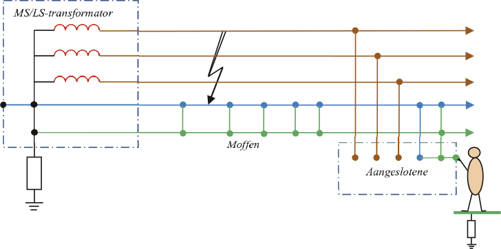The fault voltage for a phase-to-earth fault in a low voltage line with a TN-C-S system can be approximately calculated using a simple equivalent circuit. In this equivalent circuit, the impedances of the transformer are represented.ZT), the phase conductorZL), the neutral conductor (ZN), the PE conductor (ZPE) and the grounding electrode at the network transformer (ZE1). The fault is a phase-to-earth connection at the end of the low-voltage line. The fault voltage on the protective conductor of the connected equipment isUf. Also indicated are: the resistance of the human bodyRm), the footwear resistance to earth (Rsch) and the touch voltage (Ua).
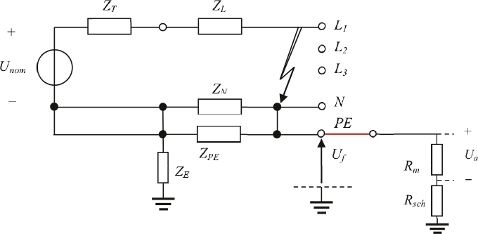In the diagram, it is visible that the return path consists of the parallel connection of the neutral and the PE conductor. The impedance Zfof the entire circuit for the short-circuit current then consists of the series connection of the transformer impedance, the phase impedance, and the return impedance:
[ |
5.13 |
] |
The short-circuit current is calculated from the nominal transformer voltage and the circuit impedance. It is assumed that the source on the medium voltage side of the transformer is infinitely strong.
[ |
5.14 |
] |
The fault voltage on the PE is calculated from the fault current and the return impedance. This is equal to the voltage division of the return impedance over the total circuit impedance.
[ |
5.15 |
] |
The touch voltage, the current through the human body, and the maximum duration are calculated in the same way as in equations 5.9 and 5.10. The touch voltages and their duration must be limited to safe values. Therefore, the impedance of the return path is kept as low as possible. Due to the ratio of impedances of the distribution transformer and the phase and return conductors in the cable, the voltage increase is greatest during short circuits at the end of a section. This limits the length of the cable in a TN system network. Figure 5.22 shows the voltage increase on the PE conductor as a function of the distance from the fault location to the distribution transformer for a low-voltage section of a 300 m long 4x95 VVMvKsas/Alk cable, powered by a 10250/400 V transformer of 250 kVA. This assumes phase-to-earth faults in the network cable.
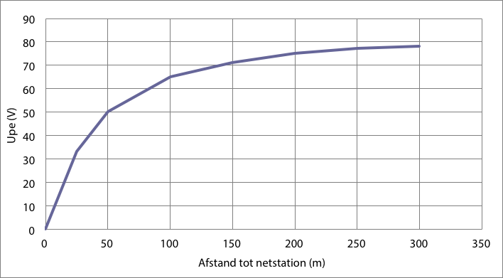Due to the increasing impedance, the short-circuit current decreases as the fault location moves further towards the end of the line, causing a fuse to take more time to disconnect. This combination of higher voltage on the PE and the longer duration of the short circuit makes a short circuit at the end of the line more dangerous than at the beginning of the line. This phenomenon, in particular, limits the length of the low-voltage cable. The application of fast-acting fuses can provide more flexibility in cable length.
In summary, safety is enhanced by timely disconnection and by limiting the touch voltage. Timely disconnection is determined by the magnitude of the short-circuit current and the chosen protection. The level of touch voltage is determined by the impedance of the path to ground. In cases where a touch-safe situation cannot be achieved with traditional means, fast-acting fuses are applied.
A low-voltage network is powered by a 10250/400 V transformer of 250 kVA.k=4% and Pk=2.8 kW).
The impedance of this transformer is:ZT= 0.0072 + j0.0246 Ω.
The low-voltage line is 300 meters long. The cable type is 4x95 VVMvKsas/Alk.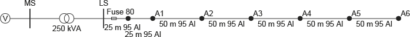
The impedance of the phase conductor over 300 meters is:ZL= 0.0960 + j0.0246 Ω.
The impedance of the neutral conductor is equal to that of the phase conductor:ZN= ZL.
The impedance of the PE conductor is:ZPE= 0.15 Ω.
Due to the connections between the neutral conductor and the PE conductor, they are connected in parallel.
As an example, a phase-to-earth fault at the end of the low-voltage line is calculated:
[ |
5.16 |
] |
A phase-to-earth fault causes a fault voltage at the connected party.Ufwith an absolute value of 80 V.
The footwear resistanceRschis 1000 Ω.
The applied curve for body resistance is the 5% curve.
The method of contact is with two hands and two feet. As a result, the body resistance is divided by 2:Rm' = Rm/ 2.
The body resistance of a human depends on the contact voltage to be calculated.Ua must first be estimated. For example, assume that the resistanceRmis equal to the footwear resistanceRsch , resulting in:Ua= Uf/ 2 = 40 V.
From the 5% curve, it follows: Rm(40) = 1500 Ω.
From the chosen method of contact, it follows:Rm(40)’ = 1500 / 2 = 750 Ω.
From the voltage division, it follows for the touch voltage:
Ua= Uf· Rm(40)’ / (Rm(40)’ + Rsch) = 80 · 750 / (750+1000) = 34 V
This is a first approximation of the value of the touch voltage. With this value, the human body resistance can be corrected. According to the 5% curve from figure 5.15, the body resistance is:Rm(34) = 1600 Ω.
From the chosen method of contact follows:Rm(34)’ = 1600 / 2 = 800 Ω.
From the voltage division, the touch voltage is:
Ua= Uf· Rm(34)’ / (Rm(34)’ + Rsch) = 80 · 800 / (800+1000) = 35 V
The calculation must be repeated until the touch voltage no longer changes. In the above calculation example, it is assumed that the correct touch voltage is 35 V. For convenience, it is also assumed thatRm(35)’ » Rm(34)’. Now the current through the human body can be calculated:
 |
[ |
5.17 |
] |
This current value can be looked up in the current-time hazard curves of figure 5.14. From this, it follows that using the C1 curve, this current must be switched off within approximately 1400 ms.
How quickly a short circuit is actually disconnected in the low-voltage network in the event of a fault depends on the short-circuit power, the type of cable, the distance from the fault location to the source, and the applied protection. A fault in the installation of the connected party is always selectively disconnected by the fuse of the connected party itself.
Not only phase-to-ground faults in the low voltage (LV) network, but also phase-to-ground faults in the medium voltage (MV) network affect the potential rise in the installations of the connected parties. The phase-to-ground fault can occur on the primary side of the transformer in the substation or elsewhere in the medium voltage network. The fault in the substation has the greatest impact on the potential rise of the protective conductor in the substation and in the LV network fed by the substation. Such faults cause a current to flow in the grounding electrode to which the metallic parts of the substation are connected. The magnitude of the fault current depends on the impedance of the fault current path and the manner in which the high voltage system is grounded.
The fault current flowing in the grounding system of the substation causes a significant increase in potential relative to the earth, determined by the magnitude of the fault current and the impedance of the substation's grounding system. In a system where the neutral and protective conductors of the low-voltage network are connected to the substation's grounding system, the fault current can result in such an increase in potential in the low-voltage network that it damages the insulation or raises the potential of the protective conductor and all connected metal frames. The magnitude and duration of the voltage across the insulation of the low-voltage equipment in the low-voltage installation due to a ground fault in the high-voltage system are specified in the NEN 1010 standard. If the supplying medium-voltage (MV) network has a floating neutral point, a phase-to-ground fault is allowed to persist for several hours. In that case, the phase voltage in the low-voltage (LV) network may be increased by up to 250 V according to the standard. If the LV network is supplied by a low-impedance grounded MV network, a short circuit must be disconnected within 5 seconds, and the phase voltage may be increased by up to 1200 V according to the standard.
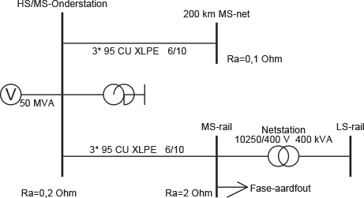The magnitude of the potential increase on the protective conductors is proportional to the magnitude of the current through the ground spreading resistance in the substation. Therefore, the effect is greater if the substation is fed by a grounded MV network than if it is fed by an ungrounded MV network. The potential increase in the LV network as a result of a phase-to-ground fault in an impedance-grounded MV network is illustrated using the example in Figure 5.24. The MV network is grounded using a grounding transformer with low impedance. The network is fed by a 50 MVA power source. The grounding transformer has a reactance of 7 Ω. The network includes 200 km of cable of the type 3x95 mm².2Cu XLPE 6/10 kV connected, which represents the capacity of all cables connected to the substation. A single medium-voltage strand of 15 km of cable of the type 3x95 mm²2Cu XLPE 6/10 kV is specifically modeled to demonstrate the potential increase as a result of the phase-to-ground fault. At the end of this medium-voltage strand, a substation is modeled with a medium-voltage busbar, transformer, and low-voltage busbar. The substation has a grounding system with a resistance of 0.2 Ω. The network station has a grounding system with a resistance of 2 Ω.
A phase-to-ground fault is applied to the medium-voltage busbar of the network station. As a result, in this example, a short-circuit current of 677 A flows. This short-circuit current returns to the source via two paths: 576 A flows through the cable shielding and 230 A flows through the ground. This situation is depicted in detail in figure 5.25. The distribution of the current through the shielding and the current through the ground is determined by the cable impedances and the ground spreading resistances. Due to the current through the ground spreading resistance in the network station, a potential rise occurs on the protective conductor, which is equal to the product of the ground spreading resistance and the current flowing through it. The potential rise is theoretically equal to:
This voltage is present on all connected protective conductors in the low-voltage network linked to the substation. In practice, a low-voltage network is grounded at multiple points, and in the underlying LV network, due to the applied potential equalization, there are contacts with the earth at several locations for connected users, the so-called hidden earth contacts, which are connected in parallel with the earth distribution resistance present in the substation.RaThis reduces the value of the equivalent earth distribution resistance on the low-voltage side of the substation. An exact value cannot be provided, so the value must be estimated based on the number of connections in the underlying low-voltage network. If, for example, this causes the earth distribution resistance in the low-voltage network of figure 5.25 to be halved, the potential increase on the protective conductor is also halved. It is therefore important to take this into account.
In the NEN 1010 standard, a relationship is indicated between the level of fault voltage on the protective conductor in the low-voltage network and the duration within which this voltage must be disconnected for touch safety, see figure 5.26. The figure shows that a fault voltage of 460 V must be disconnected within 0.25 seconds and that a fault voltage of 230 V must be disconnected within 0.45 seconds. Therefore, it is important to take hidden grounding electrodes into account.
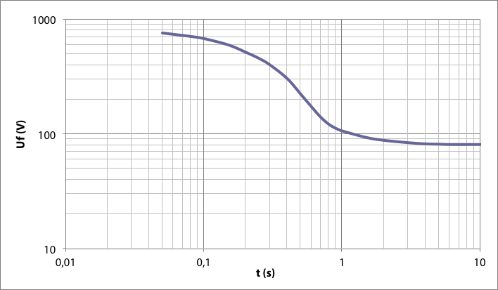